1. Definições
2. Propriedades
1. Propriedades
2. Racionalização
1. Definição
Fatorar é transformar uma soma de duas ou mais parcelas em um produto de dois ou mais fatores:
2. Agrupamento
3. Diferença de quadrados
4. Quadrado perfeito
5. Diferença de cubos
6. Cubo perfeito
Lembrando que isso segue o binomio de newton!
1. União (\(\cup\))

2. Intersecção (\(\cap\))

3. Diferença de Conjuntos
A = {a, b, c, d}; B = {c, d}
A - B = {a, b}

1. Domínio, contradomínio e imagem de uma função

Domínio: representado por todos os elementos do conjunto A = {1, 2, 3, 4, 5}
Contradomínio: representado por todos os elementos do conjunto B = {1, 2, 3, 4, 5, 6, 7}
Imagem: representada pelos elementos do contradomínio (conjunto B) que possuem correspondência com o domínio (conjunto A = {2, 3, 4, 5, 6})
2. Sobrejetora

Uma função é sobrejetora quando o contradomínio é igual a imagem, ou seja, não pode existir sobras.
3. Injetora

Uma função é injetora se elementos distintos de A têm imagens distintas em B, ou seja, possuem somente uma flecha e pode existir sobras.
4. Bijetora

Uma função é bijetora quando é ao mesmo tempo sobrejetora e injetora, ou seja, todos os elementos de A possuem um correspondente em B.
1. Definição
Chama-se função polinomial do 1º grau a toda função \(f:R \rightarrow R\) definida por:
$$\LARGE f(x) = ax + b$$

2. Inequação do 1º Grau
Chama-se inequação toda sentença do tipo ax + b > 0. Para resolver basta isolar o x: \(\large \quad 2x - 6 > 0 \rightarrow 2x > 6 \rightarrow x > 3\)
1. Definição
Chama-se função polinomial do 2º grau a toda função \(f:R \rightarrow R\) definida por:
$$\LARGE f(x) = ax^2 + bx + c$$
a > 0 - Curvatura para cima
a < 0 - Curvatura para baixo
b > 0 - Atravessa o eixo y crecendo
b < 0 - Atravessa o eixo y descrescendo
b = 0 - Atravessa o eixo y horizontalmente
c - Onde o gráfico corta o eixo y
2. Vértica da parábola
Basta encontrar o x e depois substituir no y com a fórmula:
$$\LARGE \frac{-b}{2a}$$
2. Inequação do 2º Grau
Chama-se inequação toda sentença do tipo \(ax^2 + bx + c > 0\). Para resolver basta analisar no gráfico onde está sentença é verdadeira: $$\large x^2 + 2x - 3 > 0$$

V = {xER | x < -3 ou x > 1}
Quando x é menor que -3 e maior que 1 a sentença é verdadeira.
1. Definição
Chama-se função polinomial do 2º grau a toda função definida por:
$$\LARGE f(x) = a^x$$

2. Inequação Exponencial
Chama-se inequação toda sentença do tipo \(\large a^x > b\). Para resolver basta igualar as bases: $$\large \left( \frac{1}{3} \right)^x < \left( \frac{1}{3} \right)^2$$
Como as bases estão entre 0 e 1, 0 < a < 1, deve-se inverter o sinal:
V = {xER | x > 2}
1. Definição
Chama-se logaritmo de um número onde N > 0 em uma base a, com a > 0 e a != 1, definido por:
$$\LARGE \log_a N = a^x = N$$
2. Propriedades
3. f(x) logarítmica
Chama-se função logarítmica a toda função definida por:
$$\LARGE f(x) = \log_a x$$
1. Definição
$$\LARGE |x| = \begin{cases} x, se \space x \geq 0 \\ -x, se \space x < 0 \end{cases}$$ $$\LARGE |A| = B \Rightarrow A = B \space e \space A = -B$$
2. Inequação
$$\LARGE |A| > B \Rightarrow \textrm{A > B ou A < -B}$$ $$\LARGE |A| < B \Rightarrow \textrm{-B < A < B}$$
1. Razão
\(\LARGE r = a_{n+1} - a_n\)
2. Termo geral de uma P.A.
\(\LARGE a_n = a_1 + (n - 1) \cdot r\)
3. Propriedade de 3 termos consecutivos de uma P.A.
\(\LARGE a_p = \frac{a_{p-1} + a_{p+1}}{2}\)
4. Propriedade de dois termos equidistantes dos extremos
\(\LARGE a_p + a_k = a_1 + a_n\)
5. Soma dos n primeiros termos
\(\LARGE S_n = \frac{(a_1 + a_n) \cdot n}{2}\)
1. Razão
\(\LARGE q = \frac{a_{n+1}}{a_n}\)
2. Termo geral de uma P.G.
\(\LARGE a_n = a_1 \cdot q^{n - 1}\)
3. Propriedade de 3 termos consecutivos de uma P.G.
\(\LARGE a_p^2 = a_{p-1} \cdot a_{p + 1}\)
4. Propriedade de dois termos equidistantes dos extremos
\(\LARGE a_p \cdot a_k = a_1 \cdot a_n\)
5. Produto dos n primeiros termos
\(\LARGE |P_n| = \sqrt{(a_1 \cdot a_n)^n}\)
6. Soma dos infinitos termos de uma P.G.
\(\LARGE - 1 < q < 1\)
\(\LARGE S = \frac{a_1}{1 - q}\)
\(A_{2x3}\)
\(A = \begin{bmatrix}
a_{11} & a_{12} & a_{13} \\
a_{21} & a_{22} & a_{23}
\end{bmatrix}\)
Matriz nula
\(0_{2x3} = \begin{bmatrix} 0 & 0 & 0 \\ 0 & 0 & 0 \end{bmatrix}\)
Matriz identidade
\(I_{2} = \begin{bmatrix}
1 & 0 \\
0 & 1
\end{bmatrix}\)
\(I_{3} = \begin{bmatrix}
1 & 0 & 0 \\
0 & 1 & 0 \\
0 & 0 & 1
\end{bmatrix}\)
Matriz oposta
\(A = \begin{bmatrix} 1 & 3 & 4 \\ 2 & 1 & -4 \end{bmatrix} \Rightarrow -A = \begin{bmatrix} -1 & -3 & -4 \\ -2 & -1 & 4 \end{bmatrix} \)
Matriz transposta
\(A = \begin{bmatrix} 1 & 3 & 7 \\ 2 & 4 & 6 \end{bmatrix} \Rightarrow A^{t} \begin{bmatrix} 1 & 2 \\ 3 & 4 \\ 7 & 6 \end{bmatrix} \)
Adição, subtração e multiplicação por número real
\(A = \begin{bmatrix} 1 & 3 & 7 \\ 2 & 4 & 6 \end{bmatrix} \Rightarrow 3 \cdot A = \begin{bmatrix} 3 & 9 & 21 \\ 6 & 12 & 18 \end{bmatrix} \Rightarrow 3 \cdot A - A = \begin{bmatrix} 2 & 6 & 14 \\ 4 & 8 & 12 \end{bmatrix} \)
Multiplicação de 2 matrizes
Sendo \(\LARGE A_{mxn} \cdot B_{pxq} \textrm{ n precisa obrigatoriamente ser igual a p, linhas = colunas}\)
Só aplicar linha x coluna!
\(\LARGE \begin{bmatrix}
2 & 3 & 1 \\
0 & 1 & 2
\end{bmatrix}
\cdot
\begin{bmatrix}
2 & 0 \\
1 & -1 \\
3 & 5
\end{bmatrix}
=
\begin{bmatrix}
10 & 2 \\
7 & 9 \\
\end{bmatrix}
\)
1. sen, cos, tg
2. Relações fundamentais e auxiliares
Relações Auxiliares:
1. Definição

2. Área do setor
Para calcular a área do setor basta realizar a seguinte regra de três:


1. Adição e subtração
\(\LARGE cos(a+b) = cos \space a \cdot cos \space b - sen \space a \cdot sen \space b\)
\(\LARGE cos(a-b) = cos \space a \cdot cos \space b + sen \space a \cdot sen \space b\)
\(\LARGE sen(a+b) = sen \space a \cdot cos \space b + sen \space b \cdot cos \space a\)
\(\LARGE sen(a-b) = sen \space a \cdot cos \space b - sen \space b \cdot cos \space a\)
\(\LARGE tg(a+b) = \frac{tg \space a + tg \space b}{1 - tg \space a \cdot tg \space b}\)
\(\LARGE tg(a-b) = \frac{tg \space a - tg \space b}{1 + tg \space a \cdot tg \space b}\)
2. Arco Duplo
\(\LARGE cos(2a) = cos^2a - sen^2a\)
\(\LARGE cos(2a) = 2 \cdot cos^2a - 1\)
\(\LARGE cos(2a) = 1 - 2 \cdot sen^2a\)
\(\LARGE sen(2a) = 2 \cdot sen \space a \cdot cos \space a\)
\(\LARGE tg(2a) = \frac{2 \cdot tg \space a}{1 - tg^2a}\)
3. Arco Triplo
\(\LARGE cos(3a) = 4 - cos^3a - 3 \cdot cos \space a\)
\(\LARGE sen(3a) = 3 \cdot sen \space a - 4 \cdot sen^3a\)
1. Lei dos senos
2 ângulos e 1 lado
\(\LARGE \frac{a}{sen \space A} = \frac{b}{sen \space B} = \frac{c}{sen \space C}\)
1. Lei dos cossenos
2 lados e 1 ângulo
\(\LARGE a^2 = b^2 + c^2 - 2 \cdot b \cdot c \cdot cos \space A\)
1. Definição
$$\LARGE x = arc \space sen(y)$$
$$\LARGE sen \space 30º = \frac{1}{2} \Rightarrow arc \space sen(\frac{1}{2}) = 30º$$
1. Nomenclatura
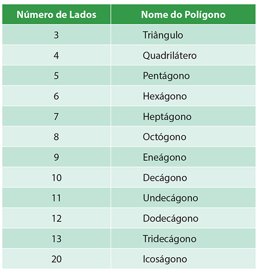2. Número de diagonais
3. Soma dos ângulos internos
4. Somo das ângulos externos
1. Incentro
Incentro é o ponto de intersecção das bissetrizes internas do triângulo
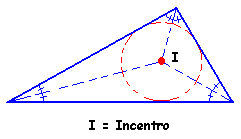2. Circuncentro
Circuncentro é o ponto de intersecção das mediatrizes dos lados do triângulo
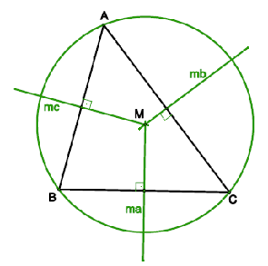3. Baricentro
Baricentro é o ponto de intersecção das medianas do triângulo e divide cada mediana na razão de 2 para 1
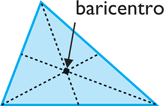4. Ortocentro
Ortocentro é o ponto de intersecção das retas suportes das alturas do triângulo
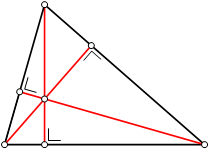
$$\LARGE S = \frac{l \cdot R}{2}$$
1. Movimento Uniforme (M.U.)
2. Movimento Uniformemente Variado (M.U.V.)
3. Aceleração
4. Derivando a função (E V A)
1. Ângulo
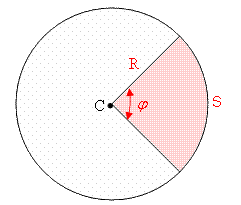2. Período (T) e frequência (f)
T: tempo gasto numa volta completa.
f: número de voltas (n) num certo intervalo de tempo (t)
Relações entre T e f:
3. Velocidade angular média
4. Aceleração angular média
5. Movimento circular uniforme (MCU)
Relação entre \(\LARGE \omega\) e o V
Função horária do espaço angular
6. Movimento uniformemente variado (MCUV)
Aceleração angular e escalar
Equações do MCUV
- \(\LARGE \theta = \theta_0 + \omega_0 t + \frac{\gamma \cdot t^2}{2}\)
- \(\LARGE \omega = \omega_0 + \gamma t\)
- \(\LARGE \omega^2 = \omega_0^2 + 2\gamma \Delta \theta\)
1. Alcance
1. Relações
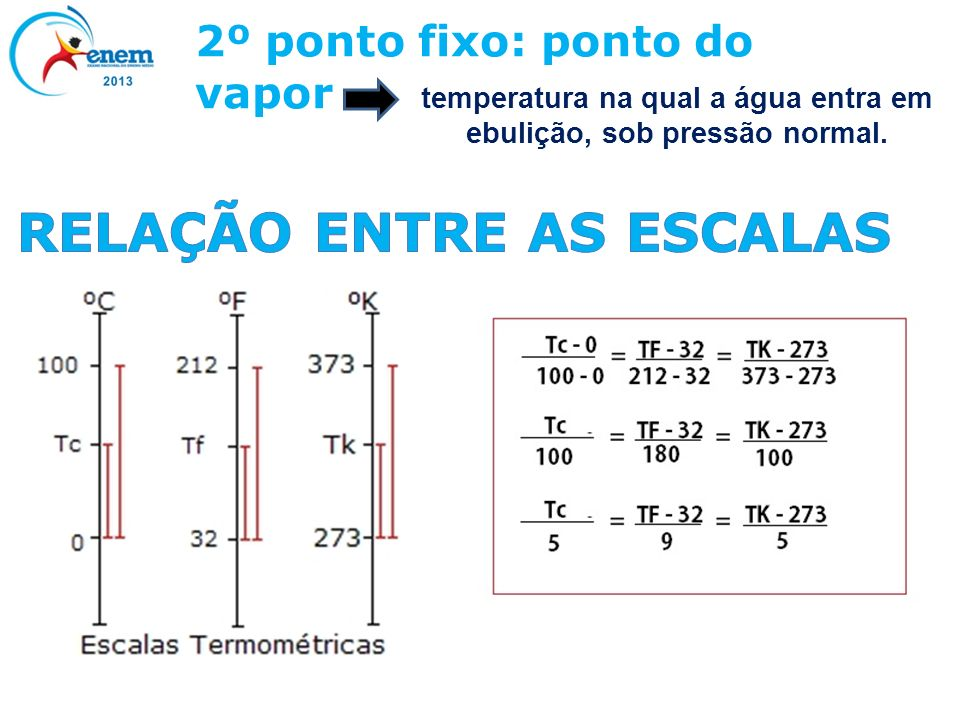2. Fórmulas
2. Outras relações
\(\LARGE \frac{\Delta C}{100} = \frac{\Delta F}{180} \Rightarrow \frac{\Delta C}{5} = \frac{\Delta F}{9}\)
1. Definições
Calor sensível: calor utilizado para variação apenas da temperatura do corpo.
\(\LARGE Q = mct\)
Calor latente: calor utilizado para mudança de estado físico.
\(\LARGE Q = ml\)
Capacidade térmica: determina a quantidade de calor de que esse corpo necessita para veriar sua temperatura de uma unidade.
\(\LARGE Q = mc\)
Balanço energético: trocam energia até atingir equilíbrio térmico.
\(\LARGE \sum Q_{trocado} = 0\)
\(\LARGE Q_1 + Q_2 + Q_3 = 0\)
1. Tipos
Condução: é o processo de transmissão de calor em que a energia térmica passa de um local para o outro através das partículas do meio que os separa, não podendo acontecer no vácuo.
Convecção: constitui-se do movimento de massas fluidas.
Radiação: é o processo de transmissão de calor por meio de ondas eletromagnéticas.
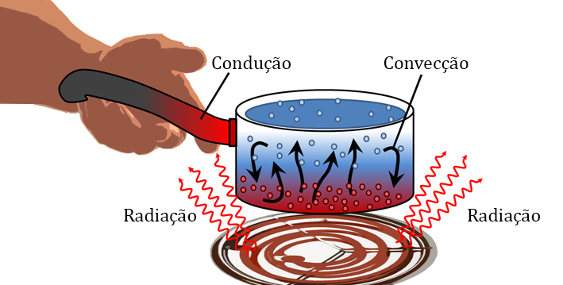
2. Fluxo de calor (Lei de Fourier)
\(\LARGE \phi = \frac{C \cdot S \cdot \Delta T}{L}\)
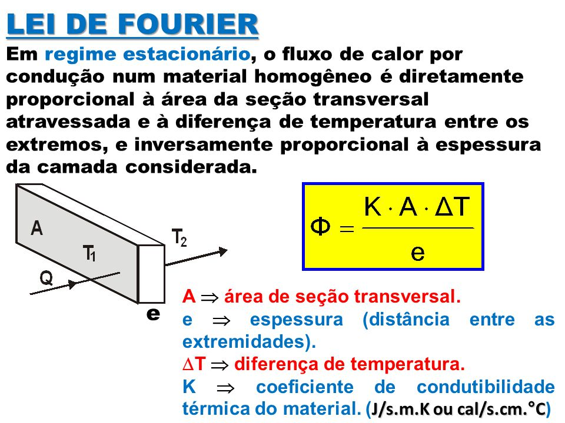1. Equação de Clapeyron
\(\LARGE p \cdot v = n \cdot R \cdot T\)
2. Equação geral dos gases perfeitos
\(\LARGE \frac{p_i V_i}{T_i} = \frac{p_o V_o}{T_o}\)
3. Transformações de um gás
Isotérmica: são as que acontecem com a temperatura constante.
Isobáricas (ou Isopiézicas): são as que acontecem com a pressão constante.
Isométricas (ou Isocóricas): são as que acontecem com o volume constante.
Adiabática: são as que ocorrem sem troca de calor com o meio externo
1. O que é
Termodinâmica é a ciência que estuda a relação entre a energia térmica em trânsito (calor) e a energia mecânica em trânsito (trabalho) trocadas por um sistema com o meio externo e a relação entre essas trocas e as propriedades do sistema.
2. Transformações
\(\LARGE \textrm{Volume aumenta} \Leftrightarrow \textrm{sistema realiza trabalho } (\tau > 0)\)
\(\LARGE \textrm{Volume diminui} \Leftrightarrow \textrm{sistema recebe trabalho } (\tau < 0)\)
\(\LARGE \textrm{Volume constante} \Leftrightarrow \textrm{sistema não troca trabalho } (\tau = 0)\)
3. Trabalho de um sistema num ciclo (fechado)
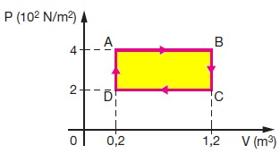
O trabalho é dado pela área interna do sistema!
Sentido horário - sistema realiza trabalho (T > 0)
Sentido anti-horário - sistema recebe trabalho (T < 0)
4. Energia Interna
\(\LARGE U = \frac{3}{2} \cdot n \cdot R \cdot T = \frac{3}{2} \cdot p \cdot v\)
A energia interna é diretamente proporcional à temperatura absoluta do gás!
5. Primeira Lei da Termodinâmica
Princípio da conservação de energia!
\(\LARGE Q = \tau + \Delta U\)
6. Máquina térmica
\(\LARGE Rendimento \Rightarrow \eta = 1 - \frac{T_2}{T_1}\)
\(\LARGE Rendimento \Rightarrow \eta = 1 - \frac{Q_2}{Q_1}\)
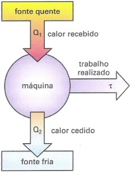
7. Segunda Lei da Termodinâmica
Segunda Lei da Termodiâmica: nenhuma máquina térmica, funcionando em ciclos, pode transformar toda a energia térmica (calor) recebida da fonte quente em energia mecânica (trabalho).
Ciclo de Carnot: é o ciclo com maior rendimento possível, só teria rendimento 100% se a fonte fria estivesse no zero absoluto
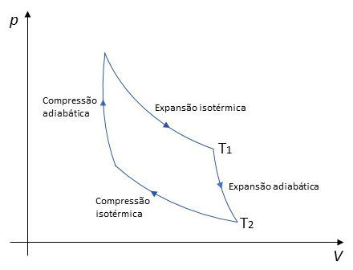
Tensão: U, voltagem
Intensidade: i
e: \(\LARGE 1,6 \cdot 10^{-19}\)
\(\LARGE Q = n \cdot e\)
\(\LARGE Q = i \cdot \Delta t\)
\(\LARGE 1V = \frac{1J}{1C}\)
Efeito Joule: quando um resistor é percorrido por corrente elétrica, ocorre a transformação de energia elétrica em energia térmica, devido ao choque dos elétrons livres com os átomos do condutor.
1. Primeira Lei de Ohm
\(\LARGE U = r \cdot i\)
2. Segunda lei de Ohm
\(\LARGE R = p \cdot \frac{l}{A}\)
3. Associação de resistores em série
\(\LARGE U = U_1 + U_2 + U_3\)
\(\LARGE R = R_1 + R_2 + R_3\)
Com i igual para o circuito inteiro
4. Associação de resistores em paralelu
\(\LARGE I = I_1 + I_2 + I_3\)
\(\LARGE \frac{1}{R} = \frac{1}{R_1} + \frac{1}{R_2} + \frac{1}{R_3}\)
Com U igual para o circuito inteiro
\(\LARGE R = \frac{R_1 \cdot R_2}{R_1 + R_2}\)
5. Gerador Real
\(\LARGE U = E - r \cdot i\)
\(\LARGE \textrm{Lei de Pouillet } i = \frac{E}{r + R}\)
6. Associação de geradores em série
\(\LARGE U = U_1 + U_2 + U_3\)
\(\LARGE E = E_1 + E_2 + E_3\)
\(\LARGE r = r_1 + r_2 + r_3\)
7. Associação de geradores em paralelo
\(\LARGE I = i_1 + i_2 + i_3\)
\(\LARGE E = E\)
\(\LARGE r_p = \frac{r}{n}\)
\(\LARGE r_p = \frac{r_1 + r_2}{2}\)
8. Circuito gerador-receptor
\(\LARGE i = \frac{\sum E - \sum E'}{\sum r + \sum r' + \sum R}\)
9. Potência
\(\LARGE \textrm{Potência total } P = U \cdot i\)
\(\LARGE \textrm{Potência dissipada } P = R \cdot i^2\)
\(\LARGE P = \frac{E}{\Delta t}\)
\(\LARGE 1W = 1 \frac{J}{s}\)
\(\LARGE P = \frac{U^2}{R}\)
10. Método da ponte de Wheatstone
\(\LARGE R_1 \cdot R_3 = R_2 \cdot R_4\)
1. Tipos de forças
- Força peso: \(\LARGE P = m \cdot g\)
- Força normal: reação ao contato, sendo perpendicular à superficie\)
- Força tração: força com tração, cordas...\)
- Força elástica: molas\)
2. Leis de Newton
- Primeira Lei: Inércia
- Segunda Lei: \(\LARGE F_r = m \cdot a\)
- Terceira Lei: Ação e reação
1. Lei de Hooke
2. Associação de molas em série
3. Associação de molas em paralelo
1. Roldana Fixa
\(\LARGE F = P\)
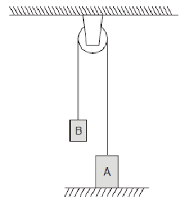2. Roldana Móvel
\(\LARGE 2T_2 = T_1\)
\(\LARGE T_1 = P\)
\(\LARGE F = T_2 = \frac{T_1}{2}\)
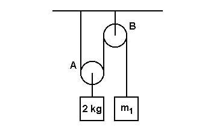3. Talha Exponencial
\(\LARGE F = \frac{P}{2^n}\)
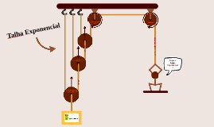4. Moitão
\(\LARGE 4F = P\)
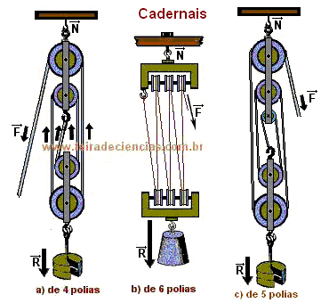Quinhetismo (1500 - 1601)
O Quinhentismo representa a primeira manifestação literária no Brasil que também ficou conhecida como "literatura de informação". É um período literário que reúne relatos de viagem com características informativas e descritivas. São textos que descrevem as terras descobertas pelos portugueses no século XVI, desde a fauna, a flora e o povo. Vale lembrar que o Quinhentismo brasileiro ocorreu paralelo ao Classicismo português e o nome do período refere-se a data de início: 1500.
Quinhentismo no Brasil
Com a chegada dos portugueses em território brasileiro em 1500, as terras encontradas foram relatadas pelos escrivães que acompanhavam os navios. Assim, a literatura de informação foi produzida pelos viajantes no início do século XVI, no período do Descobrimento do Brasil e das Grandes navegações. Além disso, os jesuítas, responsáveis por catequizarem os índios, criaram uma nova categoria de textos que fizeram parte do quinhentismo: a "literatura de catequese". Os principais cronistas desse período são: Pero Vaz de Caminha, Pero Magalhães Gândavo, Padre manuel da Nóbrega e Padre José de Anchieta.
Características do Quinhentismo
- Crônicas de viagens
- Textos descritivos e informativos
- Conquista material e espiritual
- Linguagem simples
- Utilização de adjetivos
Autores e Obras
Pero Vaz de Caminha (1450-1500)
Escrivão-mor da esquadra liderada por Pedro Álvares Cabral (1468-1520), Pero Vaz de Caminha, escritor e vereador português, registrou suas primeiras impressões acerca das terras brasileiras. Fez isso por meio da "Carta de Achamento do Brasil" datada de 1.º de maio de 1500.
A Carta de Pero Vaz de Caminha, escrita para o Rei de Portugal, D. Manuel, é considerada o marco inicial da Literatura Brasileira, visto ser o primeiro documento escrito sobre a história do Brasil. Seu conteúdo aborda os primeiros contatos dos lusitanos com os indígenas brasileiros, bem como as informações e impressões sobre a descoberta das novas terras.
José de Anchieta (1534-1597)
José de Anchieta foi historiador, gramático, poeta, teatrólogo e um padre jesuíta espanhol. No Brasil, ele teve a função de catequizar os índios sendo um defensor desse povo contra os abusos dos colonizadores portugueses. Dessa maneira, ele aprendeu a língua tupi e desenvolveu a primeira gramática da língua indígena, chamada de "Língua Geral".
Suas principais obras são "Arte de gramática da língua mais usada na costa do Brasil" (1595) e "Poema à virgem". A obra do Padre José de Anchieta só foi totalmente publicada no Brasil na segunda metade do século XX.
Pero de Magalhães Gândavo (1540-1580)
Pero de Magalhães foi gramático, professor, historiador e cronista português. Ficou conhecido pelos relatos que fez sobre a fauna, a flora e a dimensão das terras brasileiras em seu livro "História da província de Santa Cruz a que vulgarmente chamamos de Brasil".
Além dos animais distintos e das plantas exóticas, ele descreve sobre os povos indígenas e a descoberta do Brasil por Pedro Álvares Cabral. Outra obra que merece destaque é "O Tratado da Terra do Brasil" (1576).
Manuel da Nóbrega (1517-1570)
Padre Manuel da Nóbrega foi um jesuíta português e chefe da primeira missão jesuítica à América: Armada de Tomé de Sousa (1549). Participou da primeira missa realizada no Brasil e da fundação das cidades de Salvador e Rio de Janeiro.
Seu trabalho no Brasil foi de catequizar os índios e suas obras que merecem destaque são:
- "Informação da Terra do Brasil" (1549)
- "Diálogo sobre a conversão do gentio" (1557)
- "Tratado contra a Antropofagia" (1559)
Barroco no Brasil (1601 - 1768)
O Barroco no Brasil tem início no final do século XVII. No país, essa tendência artística teve grande destaque na arquitetura, escultura, pintura e literatura. Na literatura, o marco inicial do barroco é a publicação da obra “Prosopopeia” (1601) de Bento Teixeira. Na escultura e arquitetura, Aleijadinho foi sem dúvida um dos maiores artistas barrocos brasileiros.
Contexto Histórico
Influenciado pelo barroco português, no Brasil este estilo se desenvolveu durante o período colonial no chamado “Século de Ouro”. Foi durante o ciclo do ouro que a exploração desse minério foi a principal atividade econômica desenvolvida no país. Minas Gerais foi o grande foco onde muitas jazidas foram encontradas.
Nessa época, a primeira capital do Brasil, Salvador, foi transferida para o Rio de Janeiro. Diante disso, o número de habitantes no Brasil aumentou consideravelmente o que propiciou uma época de forte desenvolvimento econômico no país. No barroco mineiro, merece destaque o escultor e arquiteto brasileiro: Aleijadinho.
Características do Barroco
- Linguagem dramática
- Racionalismo
- Exagero e rebuscamento
- Uso de figuras de linguagem
- União do religioso e do profano
- Arte dualista
- Jogo de contrastes
- Valorização dos detalhes
- Cultismo (jogo de palavras)
- Conceptismo (jogo de ideias)
Principais Autores e Obras
- Bento Teixeira (1561-1618): autor de “Prosopopeia” (1601), poema épico com 94 estrofes que exalta a obra de Jorge de Albuquerque Coelho, terceiro donatário da capitania de Pernambuco.
- Gregório de Matos (1633-1696): um dos maiores representantes da literatura barroco no Brasil, que se destacou com sua poesia lírica, religiosa, erótica e satírica. É conhecido como “Boca do Inferno”, uma vez que sua poesia ironizava diversos aspectos da sociedade.
- Manuel Botelho de Oliveira (1636-1711): foi o primeiro brasileiro a publicar versos no estilo barroco. De sua obra destaca-se: “Música do Parnaso” (1705).
- Frei Vicente de Salvador (1564-1636): historiógrafo e o primeiro prosador do país. De sua obra destacam-se: “História do Brasil” e “História da Custódia do Brasil”.
- Frei Manuel da Santa Maria de Itaparica (1704-1768): autor de “Eustáquios” e “Descrição da Ilha de Itaparica”.
Arcadismo (1768 - 1808)
No Brasil, o Arcadismo teve como marco inicial a publicação de “Obras Poéticas”, de Cláudio Manuel da Costa em 1768 e, ademais, a fundação da “Arcádia Ultramarina”, em Vila Rica. Vale lembrar que o nome dessa escola literária provém das Arcádias, ou seja, das sociedades literárias da época. Os principais escritores brasileiros desse período são: Cláudio Manuel da Costa, Santa Rita Durão, Basílio da Gama e Tomás Antônio Gonzaga.
Características do Arcadismo
- Exaltação da natureza
- Valorização do cotidiano e da vida simples, pastoril e no campo (bucolismo)
- Crítica a vida nos centros urbanos
- Modelo clássico
- Linguagem simples
- Utilização de pseudônimos
- Objetividade
- Temas simples: amor, vida, casamento, paisagem
- Fugere Urbem (fugir da cidade)
- Inutilia Truncat (cortar o inútil)
- Aurea Mediocritas (mediocridade áurea/vida comum)
- Locus Amoenus (refúgio ameno/agradável)
Autores Brasileiros do Arcadismo
Cláudio Manuel da Costa (1729-1789)
Poeta, advogado e jurista brasileiro, Cláudio Manuel da Costa é considerado o precursor do Arcadismo no Brasil e destacou -se por sua obra literária, mais precisamente, a poesia. O poeta mineiro em seus textos, aborda elementos locais, descrevendo paisagens, temática pastoril e expressando um forte sentimento nacionalista.
Acusado de participar da Inconfidência Mineira junto com Tiradentes, foi preso em 1789 e suicidou-se na cadeia. Suas obras que merecem destaque: Obras Poéticas (1768) e Villa Rica (1773).
José de Santa Rita Durão (1722-1784)
Autor do poema épico Caramuru (1781), Freire Santa Rita Durão foi poeta e orador, considerado um dos precursores do indianismo no Brasil. Influenciado por Camões, o poema Caramuru, com subtítulo “Poema épico do Descobrimento da Bahia”, é baseado no modelo da epopeia tradicional: proposição, invocação, dedicatória, narração e epílogo. É composto de dez cantos e versos decassílabos em oitava rima.
O texto conta a história de um português, o Caramuru, que após ter naufragado em terras brasileiras, começa a viver com os índios Tupinambás. Suas principais obras: Pro anmia studiorum instauratione oratio (1778) e Caramuru (1781).
José Basílio da Gama (1741-1795)
Poeta mineiro e autor do poema épico O Uraguai (1769), Basílio da Gama, nesse texto, aborda as disputas entre os europeus, os jesuítas e os índios sendo considerado um marco no literatura brasileira. Diferente do poema épico clássico, O Uraguai é composto de cinco cantos, com ausência de rima (rima branca) e estrofação.
Participou da Arcádia Romana na Itália e foi preso em Portugal em 1768, acusado de manter relações de amizades com os jesuítas. Suas Principais obras são: O Uraguai (1769), Epitalâmio às Núpcias da Senhora Dona Maria Amália (1769), A Declamação Trágica (1772) e Quitúbia (1791).
Tomás Antônio Gonzaga (1744-1810)
Jurista, Político e Poeta luso-brasileiro, Tomás Antônio Gonzaga é um dos grandes poetas árcades de pseudônimo Dirceu. A obra que merece destaque é Marília de Dirceu (1792) carregada de lirismo e baseada no seu romance com a brasileira Maria Doroteia Joaquina de Seixas. Com fortes impulsos afetivos, Dirceu declara-se para sua pastora idealizada: Marília. Suas principais obras: Marília de Dirceu e Cartas Chilenas (1863).
Curiosidades
- Os autores árcades portugueses que merecem destaque são: Manuel Maria Barbosa du Bocage, António Dinis da Cruz e Silva, Correia Garção, Marquesa de Alorna e Francisco José Freire.
- Outros escritores brasileiros que merecem destaque são: Inácio José de Alvarenga Peixoto (1744-1793) e Silva Alvarenga (1749-1814).
- Apesar de ser um poeta nascido em Portugal, a cidade de Marília, no Paraná recebe esse nome em homenagem ao escritor Tomás Antônio Gonzaga.
1. O descobrimento da célula
A descoberta da célula aconteceu após o descobrimento do microscópio por Hans e Zacarias Janssen (1590). Robert Hooke, 1665, apresentou à Real Sociedade de Londres resultados de suas pesquisas sobre a estrutura da cortiça observada ao microscópio em finos cortes. O material apresentava-se formado por pequenos compartimentos hexagonais delimitados por paredes espessas, lembrando, o conjunto, os favos de mel das abelhas.
Cada compartimento foi chamado de célula (pequena cavidade). Sabe-se hoje que o tecido observado por Hooke (súber) está formado por células mortas, em cujas paredes houve decomposição de suberina, tornando-as impermeáveis e impedindo as trocas de substâncias (entrada de alimento e oxigênio, saída de detritos etc.) Após a suberificação e morte do tecido, restam as paredes espessas, delimitando espaços cheios de ar.

2. Estrutura de uma célula eucariótica animal

Membrana Plasmática: a membrana plasmática, membrana celular ou plasmalema é um envoltório fino, poroso e microscópico que reveste as células dos seres procariontes e eucariontes. É uma estrutura semipermeável, responsável pelo transporte e seleção de substâncias que entram e saem da célula. Tendo com funções a permeabilidade seletiva (controle da entra e saída de substâncias), proteção das estruturas celulares, delimitação do intra e extracelular, transporte de substâncias essenciais ao metabolismo celular e reconhecimento (glicocalix).
Citoplasma: é o constituinte mais abundante, formado pelo citosol e os organoides celulares. O citosol, principal componente do citoplasma, é um líquido no qual estão mergulhados os organoides celulares.
Ribossomos: os ribossomos são pequenos grânulos que aparecem livremento no cetoplasma ou aderidos às membranas do retículo endoplasmático. Tendo como como função a síntese de proteinas.
Retículo endoplasmático: trata-se de uma estrutura que auxilia a distribuição e o armazenamento de substâncias celulares. Existindo dois tipos: granulas e liso. O granular ou rugoso apresenta ribossomos aderidos às suas membranas, o que não acontece com o liso.
Mitocôndria: ocorrem as etapas de respiração celular, processo que fornece a energia necessária às atividades da célula.
Complexo Golgiense: organoide contituido por uma pilha de vesículas circulares e achatadas, servindo principalmente para armazenamento de secreções, substâncias úteis produzidas e eliminadas pela célula.
Lisossomo: são pequenas bolsas formadas por uma membrana que envolve enzimas, elementos responsáveis pela digestão de substâncias no meio intracelular.
Centrossomo: organoide situado no centro da célula e contituído por dois centríolos, pequenos cilíndros perpendiculares entre si, que exercem importantes funções no processo de divisão celular.
Citoesqueleto: a forma celular é mantida pelo citoesqueleto, um conjunto de filamentos de natureza proteica, existente no citoplasma.
Núcleo: situado geralmento no centro da célula, o núcleo é envolvido por uma dupla e porosa membrana e apresenta no seu interior o nucléolo e a cromatina. O nucléolo é um corpúsculo que origina os ribossomos. Estruturalmente, a cromatina é formada pelo DNA, onde aparecem os genes, por meio dos quais o núcleo coordena as funções celulares.
3. Estrutura de uma célula bacteriana
No centro da célula, destaca-se o nucleoide, constituído por uma única e enovelada molécula de DNA, que representa o material genético da célula.

4. Os vírus
Os vírus são acelulares, ou seja, não apresentam estrutura celular, sendo constituídos por uma macromolécula de ácido nucleico envolvida por uma cápsula de natureza proteica. São parasitas obrigatórios de células vivas, pois só se reproduzem no interior delas.

1. Fotossíntese
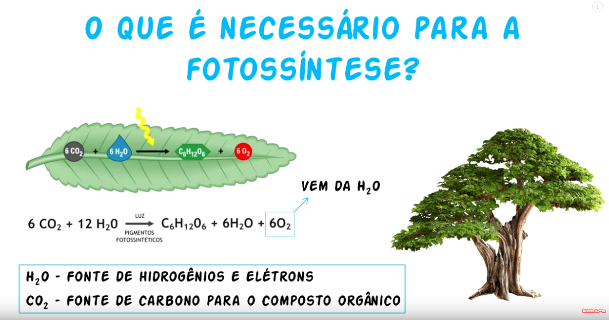 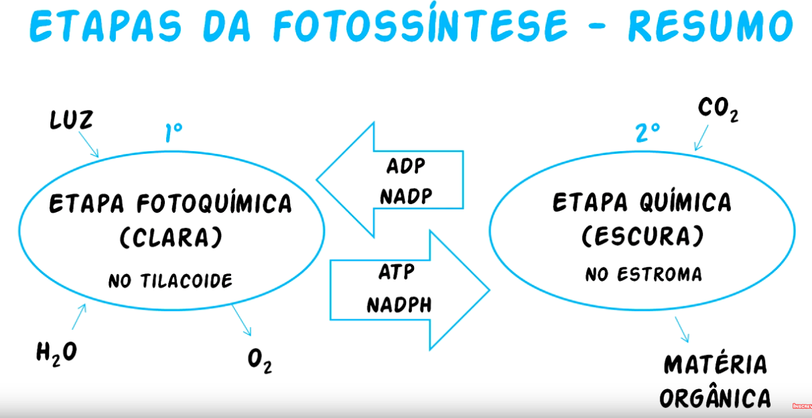
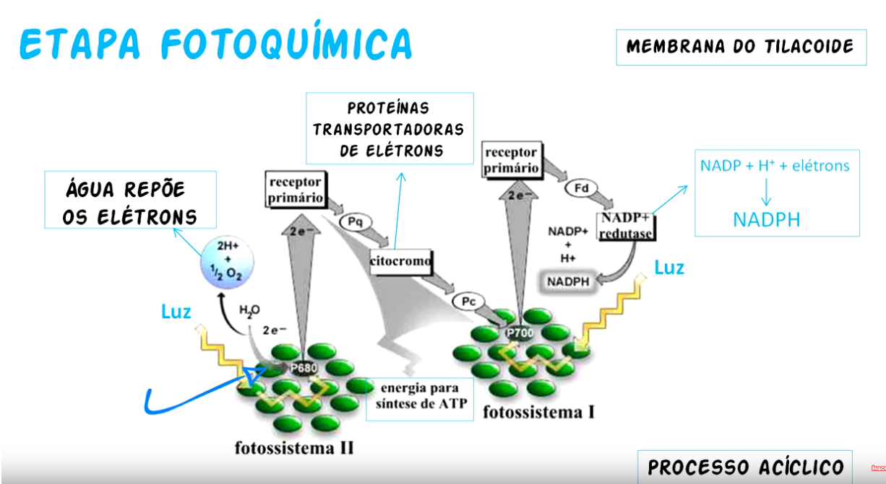
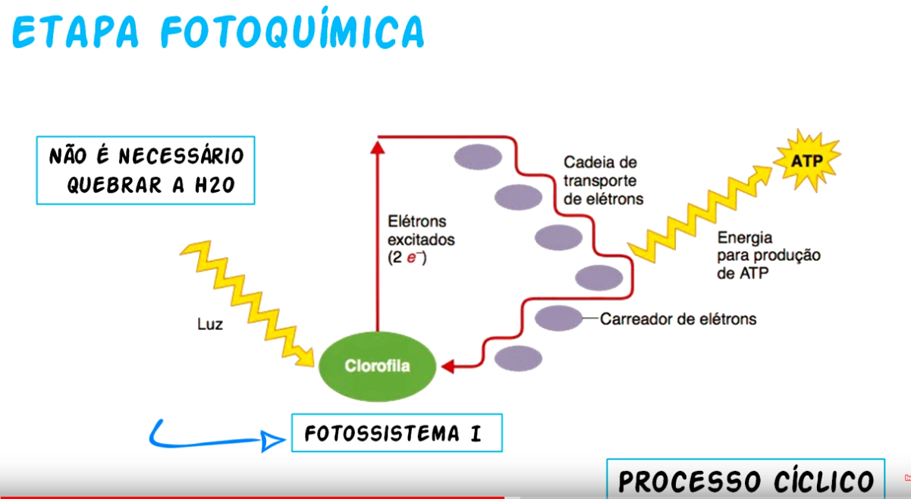
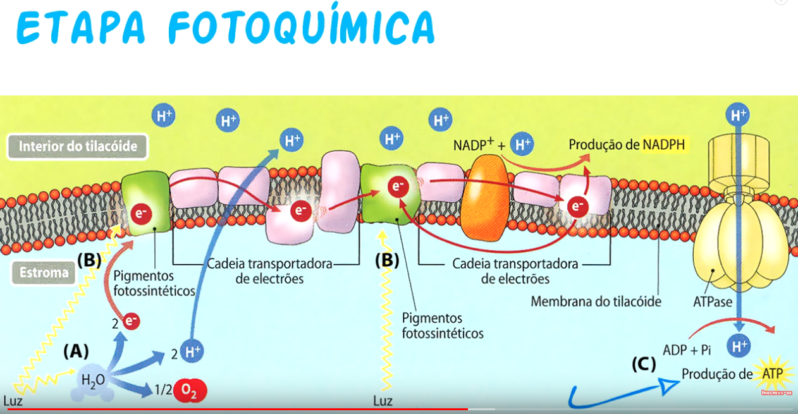
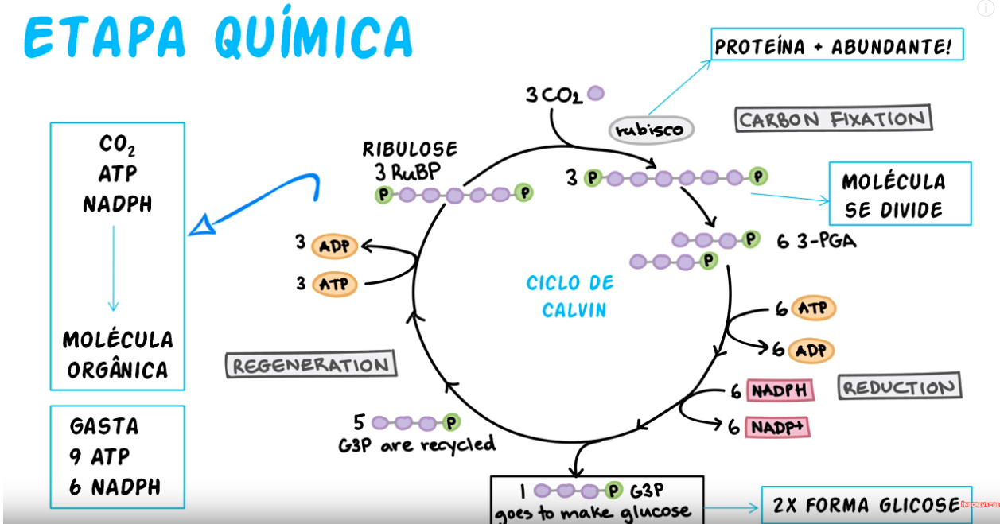
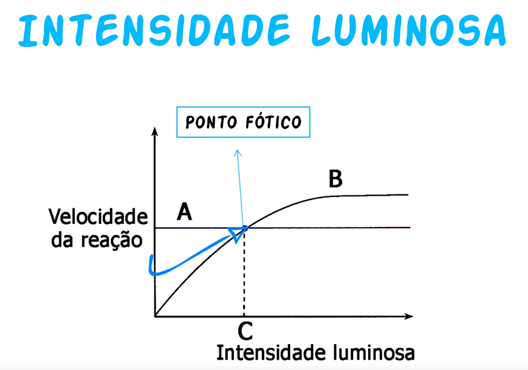
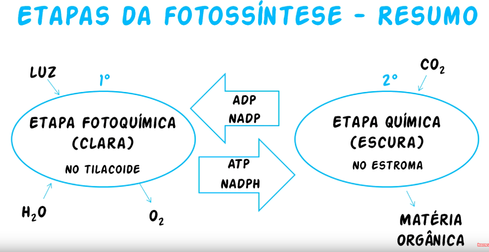
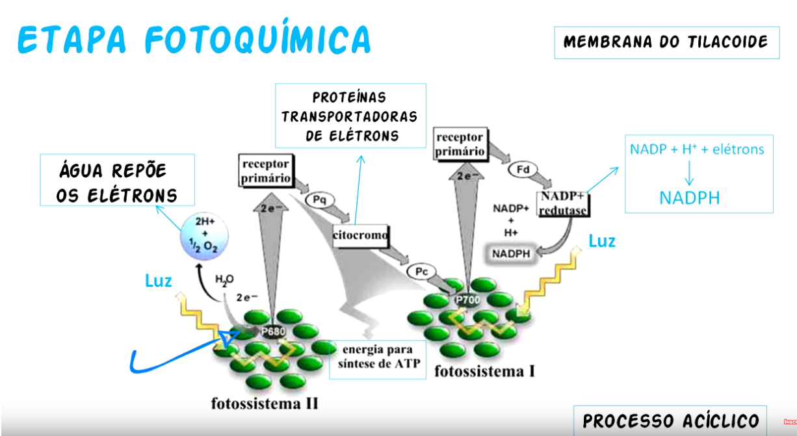
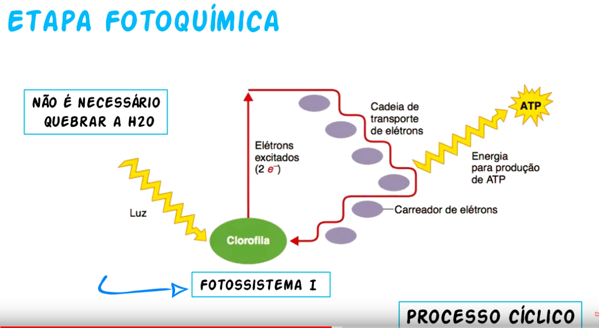
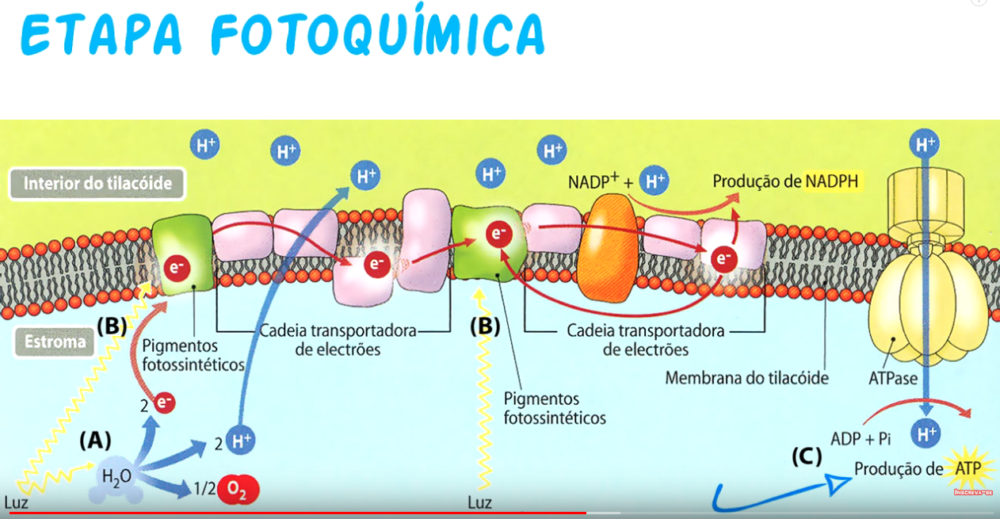
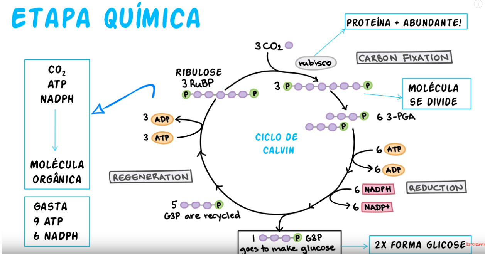
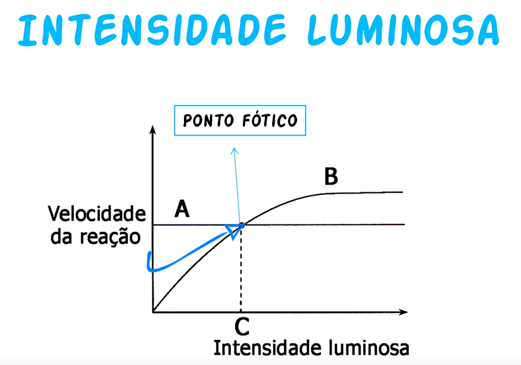
2. Respiração Celular
Respiração celular é a transformação dos açucares, gorduras ou proteinas em energia (moeda energética universal, ATP)
Glicólise: acontece a divisão de uma glicólise por meio de 2 ATP, formando no final 2 piruvatos, 2 NADH e 2 ATP.
Ciclo de Krebs: piruvato libera um CO2 e forma Acetil-CoA, dessa forma entrando no ciclo e formando (contando os 2 piruvatos) 2 ATP, 2 FADH2, 8 NADH e 6 CO2
Respiração celular: nessa etapa acontece a utilização dos NADH e FADH2, gerando muitos ATP (aproximadamente 38 somando todas as etapas anteriores, podendo variar)
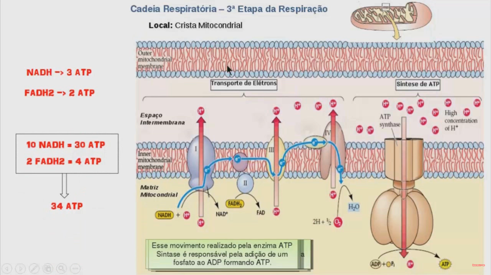3. Fermentação
A fermentação é um processo de obtenção de energia que ocorre sem a presença de gás oxigênio, portanto, trata-se de uma via de produção de energia anaeróbia. Nesse processo, o aceptor final de elétrons é uma molécula orgânica. Essa via é muito utilizada por fungos, bactérias e células musculares esqueléticas de nosso corpo que estão em contração vigorosa.
A fermentação ocorre no citosol e inicia-se com a glicólise, quando ocorre a quebra de glicose em duas moléculas de piruvato. Percebe-se, portanto, que inicialmente esse processo é semelhante à respiração celular.
A fermentação láctica é comum em células musculares, bactérias, protozoários e fungos, sendo usada para a produção de iogurte, coalhada e queijos. Já a fermentação alcoólica é normalmente realizada por leveduras e bactérias, sendo bastante explorada economicamente pelo homem, principalmente para a fabricação de alimentos como o pão e de bebidas como a cerveja, vinho e destilados.
O rendimento da fermentação é bastante pequeno quando comparado ao da respiração celular. Enquanto nesse processo é obtido apenas 2 ATP, na respiração, temos um saldo final de 30 ATP.
Curiosidade: Quando estamos praticando exercícios físicos, frequentemente sentimos dor muscular, também chamada de fadiga muscular. Isso ocorre porque as células musculares não recebem a quantidade de oxigênio necessária para realizar a respiração celular e passam a quebrar glicose de forma anaeróbia, produzindo ácido láctico. O acúmulo desse ácido faz com que as pessoas sintam dor.
1. Ácidos nucleicos
Armazenar e transmitir informação genética
Os ácidos nucleicos são macromoléculas constituídas por nucleotídeos e que formam dois importantes componentes das células, o DNA e o RNA. Eles recebem essa denominação pelo fato de possuírem caráter ácido e por serem encontrados no núcleo da célula. Os ácidos nucleicos são essenciais para todas as células, pois é a partir das moléculas de DNA e RNA que são sintetizadas as proteínas, as células se multiplicam e ainda ocorre o mecanismo de transmissão das características hereditárias. Além disso, os nucleotídeos são importantes em diversos processos, como a síntese de alguns carboidratos e lipídios e a regulação do metabolismo intermediário, ativando ou inibindo enzimas.
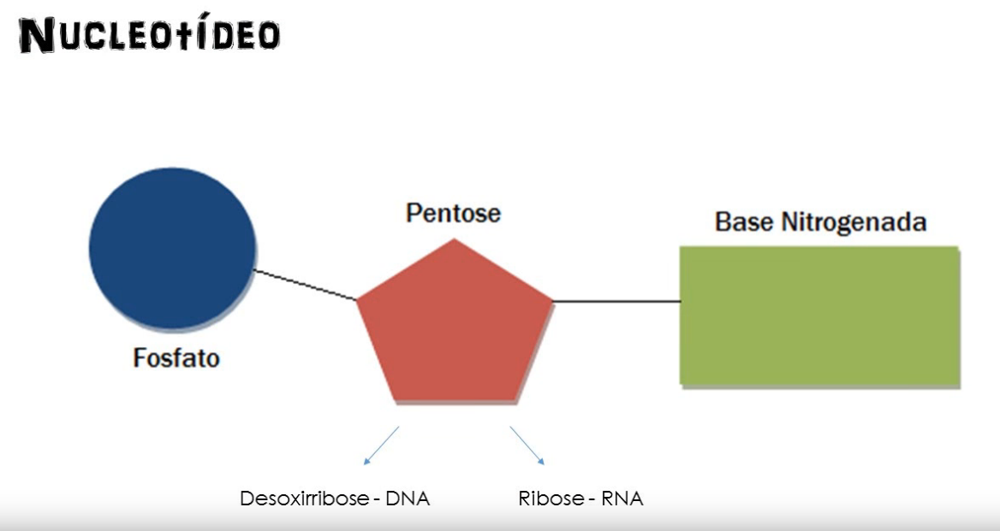 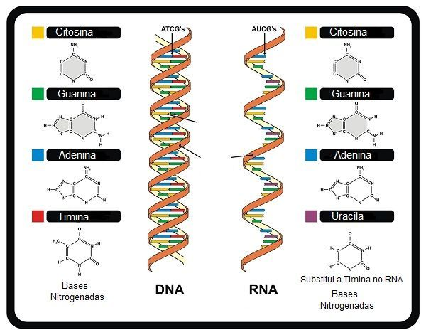 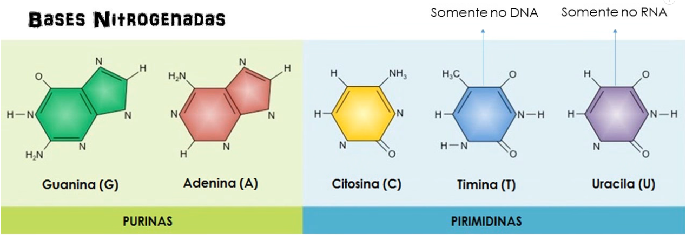DNA
AT CG - Logo, quantidade de A = T e C = G
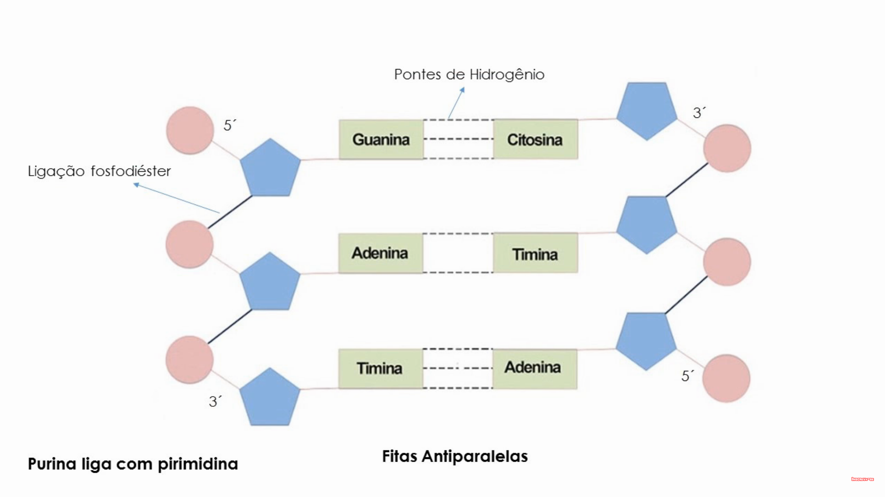 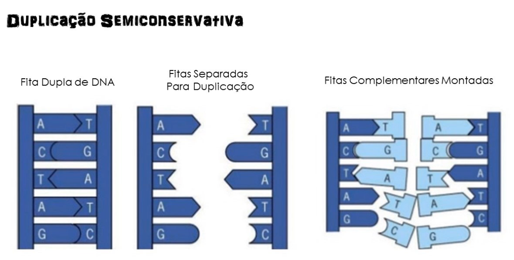RNA
AU CG - É uma fita simples
- RNAm Mensageiro: leva a informção do gene até o citoplasma, resultado da transcrição
- RNAr Ribossomico: forma o ribossomo, faz a síntese de proteinas
- RNAt Transportador: associado a aminoácidos, levam os aminoácidos para formas as proteinas, dobra em si mesmo (forma de trevo)
2. Síntese de proteínas - RNA
A síntese de proteínas é um processo rápido, que ocorre em todas as células do organismo, mais precisamente, nos ribossomos, organelas encontradas no citoplasma e no retículo endoplasmático rugoso. Esse processo pode ser dividido em três etapas:
- Transcrição: A mensagem contida no cístron (porção do DNA que contém a informação genética necessária à síntese proteica) é transcrita pelo RNA mensageiro (RNAm). Nesse processo, as bases pareiam-se: a adenina do DNA se liga à uracila do RNA, a timina do DNA com a adenina do RNA, a citosina do DNA com a guanina do RNA, e assim sucessivamente, havendo a intervenção da enzima RNA-polimerase. A sequencia de 3 bases nitrogenadas de RNAm, forma o códon, responsável pela codificação dos aminoácidos. Dessa forma, a molécula de RNAm replica a mensagem do DNA, migra do núcleo para os ribossomos, atravessando os poros da membrana plasmática e forma um molde para a síntese proteica.
- Ativação de aminoácidos: Nessa etapa, atua o RNA transportador (RNAt), que leva os aminoácidos dispersos no citoplasma, provenientes da digestão, até os ribossomos. Numa das regiões do RNAt está o anticódon, uma sequência de 3 bases complementares ao códon de RNAm. A ativação dos aminoácidos é dada por enzimas específicas, que se unem ao RNA transportador, que forma o complexo aa-RNAt, dando origem ao anticódon, um trio de códons complementar aos códons do RNAm. Para que esse processo ocorra é preciso haver energia, que é fornecida pelo ATP.
- Tradução: Na fase de tradução, a mensagem contida no RNAm é decodificada e o ribossomo a utiliza para sintetizar a proteína de acordo com a informação dada.
Os ribossomos são formados por duas subunidades. Na subunidade menor, ele faz ligação ao RNAm, na subunidade maior há dois sítios (1 e 2), em que cada um desses sítios podem se unir a duas moléculas de RNAt. Uma enzima presente na subunidade maior realiza a ligação peptídica entre os aminoácidos, o RNA transportador volta ao citoplasma para se unir a outro aminoácido. E assim, o ribossomo vai percorrendo o RNAm e provocando a ligação entre os aminoácidos.
O fim do processo se dá quando o ribossomo passa por um códon de terminação e nenhum RNAt entra no ribossomo, por não terem mais sequencias complementares aos códons de terminação. Então, o ribossomo se solta do RNAm, a proteína específica é formada e liberada do ribossomo. Para formar uma proteína de 60 aminoácidos, por exemplo, é necessário 1 RNAm, 60 códons (cada um corresponde a um aminoácido), 180 bases nitrogenadas (cada sequência de 3 bases dá origem a um aminoácido), 1 ribossomo e 60 RNAt (cada RNAt transporta um aminoácido). Pode-se notar, então, que se trata de um processo altamente complexo, já que há a intervenção de vários agentes.
Mitose
De forma prática, podemos entender que na mitose a célula se duplica para dar origem a duas novas células. Estas são conhecidas como células filhas (formadas a partir da divisão celular) e são idênticas uma da outra, uma vez que foram formadas a partir de uma única célula.
- Prófase: nesta fase, as células começam a se preparar para a divisão. É neste momento que ocorrerá a duplicação do DNA e centríolos. Com o DNA condensado e os centríolos em movimento, inicia-se o processo da divisão mitótica
- Metáfase: aqui começa o alinhamento entre os pares formados na fase anterior. Nesta etapa, o DNA alinha-se no eixo central enquanto os centríolos iniciam sua conexão com ele. Dois fios do cromossomo se ligam na parte central do centrômero.
- Anáfase: a divisão começa com os cromossomos migrando para lados opostos da célula, metade vai para um lado e a outra metade vai para o outro.
- Telófase: esta é a última fase da mitose. Nesta etapa a membrana celular se divide em duas partes, formando, assim, duas novas células. Cada uma delas ficará com metade do DNA original.
- Interfase: este é o estado “normal” da célula, ou seja, aqui ela não se encontra em divisão. Nesta fase, ela mantém o equilíbrio de todas as suas funções através da absorção dos nutrientes necessários à sua manutenção. Ela permanecerá neste estágio até estar preparada para uma nova divisão, que ocorrerá a partir da duplicação dos ácidos nucléicos. A partir de então, o ciclo se reinicia.
Meiose
A meiose é a divisão celular que ocorre na formação dos gametas, reduzindo o número de cromossomos de uma espécie pela metade. Assim, uma célula-mãe diploide origina 4 células-filhas haploides diferentes da célula mãe.
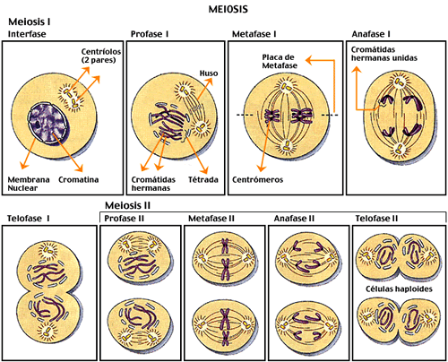